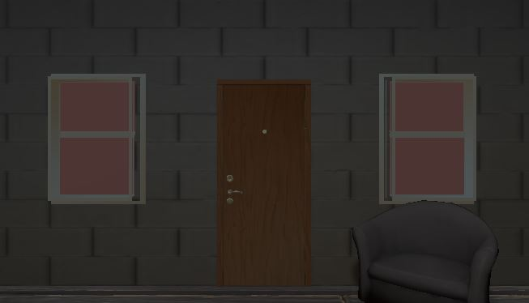

Hint/Answer
- Tutorial / 初級
- Level ★☆☆☆☆

- Intermediate / 中級
- Level ★★☆☆☆

- Superior / 上級
- Level ★★★☆☆
- 
初級 / ヒント・家具家具にカーソルをあてると虫眼鏡のマークになります。左クリックで調べていきましょう。 |
中級 / ヒント・何も書かれていない紙本をよく読んでください。また本は乱雑に置かれているため、テーブルのほかにも本があるかもしれません。 ・カラフルな紙色の順番と部屋にあるものをよく見てください。 ・本どこかにぶつけると大事なものが出てきます。 ・パスワード何かをぶつけた後に出てくる文字は1回しか出ないので注意。カラフルな紙を参考にすると解けます。 |
上級 / ヒント・フレッシュミルクミルクを使用できるものが部屋に隠されています。ヒントはラグを調べてください。 ・パスワードの順番どこかに書いてあるかもしれません。画面下部を集中して見てください。 ・パスワード額縁に書いてある数字と数字の後ろの色がヒントとなります。 ・謎の鍵パスワードを解いた後、部屋を見てみましょう。解く前と違う部分があります。 ・氷漬けの鍵溶かすために必要なものを探しましょう。 |
初級 / 答え・家具壷を調べると鍵を入手。小さな木箱に鍵を使用できるのでクリックすると金の鍵を入手。最後にドアを調べて脱出成功。 |
中級 / 答え・鍵シンクの横にある小さい棚から鍵を入手。大きな棚の中に小さい箱があるため鍵を使用する。 ・何も書かれていない紙箱からなにも書かれていない紙を見つけた後シンクの右側に落ちている本を入手。シンクを調べると紙がカラフルな紙となる。 ・カラフルな紙左から”緑””紫””赤””青”の色になるので同じ色の家具を調べていく。 ・本紫の絵は本をぶつけると5という文字が出てくる。（メッセージは1回のみしか出ないので注意） ・パスワードパスワードボタンを押し「3521」と入力するとドア側に球体が出てくるので調べてきれいな鍵を入手。最後にドアを調べて脱出成功。 |
上級 / 答え・フレッシュミルクキッチンの4つ並んでいる一番左の壷からフレッシュミルクを入手。机の積まれた本と本の間にマグカップの取っ手があるので、クリックするとコーヒーを飲むことができる。 ・パスワードの順番額縁側の画面に移動する。右下に濃い影があるのでクリックするとパスワードの順番が書かれたメモが出てくる。 ・パスワード本に書かれた色と額縁の内容を照らし合わせて解くことができる。 ・謎の鍵パスワードを解くとベッドの上に謎の小箱が出てくるので鍵を使用する。 ・氷漬けの鍵小箱から出てきたメモを使用すると氷漬けの鍵が出てくるので机の上にあるライターで溶かす。綺麗な鍵の入手後、最後にドアを調べて脱出成功。 |